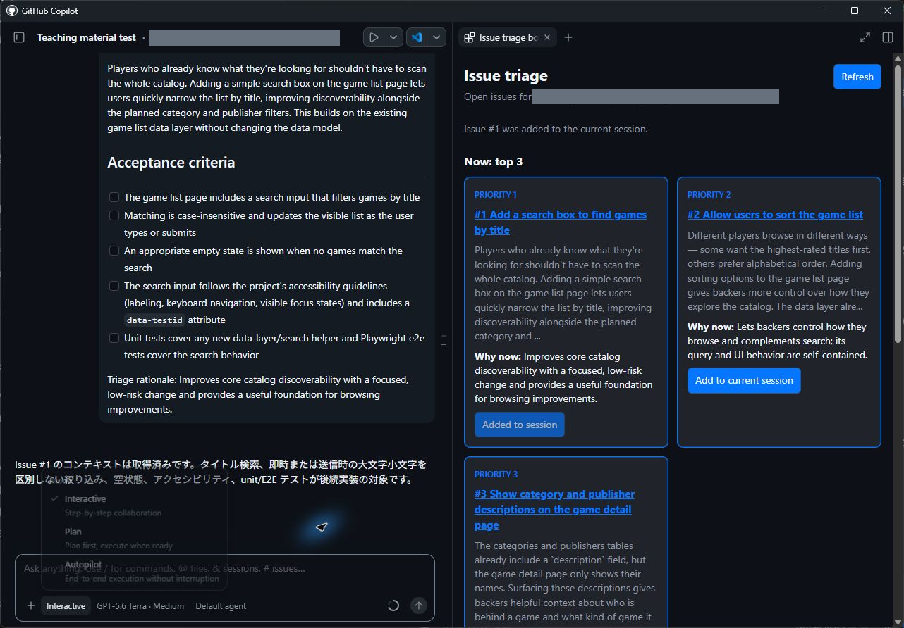
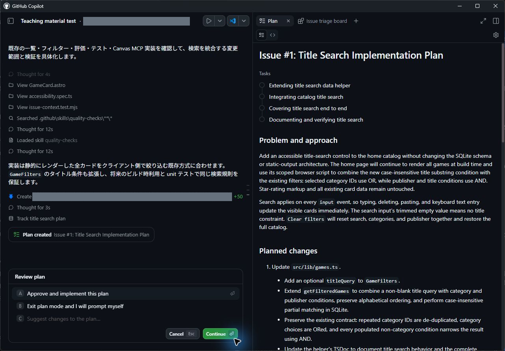

この章の進め方 Issueを比較するCanvasを作成し、Canvasだけを先にリポジトリへ共有します。別のセッションで開き直したら、検索Issueの本文を追加し、計画・実装・検証・マージへ進みます。
このレッスンでは、次の内容を学習します。
- キャンバスの概念と、チャット対話との使い分けを理解する
- バックログをトリアージするための共有カンバンボードキャンバスを作成する
- キャンバス定義をプロジェクト共有アセットとしてリポジトリに保存し、マージする
- 新しいセッションでキャンバスを開き、ボードから直接タスクを着手する
Canvasの考え方、共有する価値、検索の設計は、章末の補足で確認できます。
7.1 作業を追跡するキャンバスを作成する
星評価、コーディング標準、フィルター機能をmainへ統合しましたが、バックログにはまだ対応すべきIssueが残っています。残課題を比較し、次の作業を選ぶためのキャンバスを作成しましょう。このセッションではCanvasを完成させ、検索機能の実装は別のセッションで始めます。
ただし、古いIssue一覧を固定表示すると、完了済みの作業をもう一度選ぶおそれがあります。本演習ではGitHubの最新Open一覧を取得し、人がRefreshしたときに更新する構成にします。これは教材で指定する動作です。Canvas自体にすべてのIssueが常時同期されると考えず、どの操作で最新情報を取得するかを確かめてください。
- GitHub Copilot app を開きます。
- サイドバーの Projects で演習用プロジェクトを右クリックし、メニューの
+New session を選択します。 - 入力欄下部で演習用リポジトリが選ばれており、New worktree および main が指定されていることを確認します。作成された worktree に前章のマージ結果が正しく反映されていることも確認してください。
- 次のプロンプトを入力し、カンバンボードの作成を指示します。
作業の優先順位を整理するカンバンボードのcanvasを作ってください。
この演習リポジトリのGitHubから最新のOpen Issue一覧を取得し、上位3件と残りを分けて表示してください。Issueを固定配列に埋め込まず、再取得できるRefreshボタンを付けてください。
上位3件には内容と優先理由を記載し、mainへマージ済みの星評価とフィルター機能を理由に反映してください。
すべてのIssueカードに、番号・タイトル・URL・本文全体を現在のセッションのコンテキストへ1回だけ追加するボタンを付けてください。受け取ったエージェントは受領だけを1回返し、実装や新しいセッションの作成を始めない仕様にしてください。同じセッションへの重複送信も防いでください。
今回はCanvasの作成と確認までです。カードのIssueの実装やPR作成はまだ行わないでください。Copilotがキャンバスの作成処理を開始します。公式ドキュメントでは、セッション内で/create-canvasに続けて必要な操作を伝える方法も案内されています。作成の入口が分からない場合は、公式の作成手順も確認してください。
補足 キャンバスの生成には数分を要する場合があります。複雑な UI 構築タスクであるため、1回目の生成で完全な状態にならないこともあります。求めている操作性になるまで、チャットを通じて追加の要望を伝え、反復的に修正を指示してください。
7.1.1 作成したボードをレビューする
-
画面が開いたら、まず自分のGitHubにあるOpen Issueとカード一覧を照合します。Refreshが固定配列を再描画するだけになっていないか、一覧を取得する処理も確認してください。上位3件の優先理由では、星評価とフィルター機能がマージ済みであることを前提にしていますか。機能をこれから作る予定として扱っている場合は、mainの状態を確認させて理由を修正します。
-
本文追加ボタンは、Issueの要件を次の計画に渡す操作です。ボタンから「Issueに着手してください」と送信すると、計画を確認する前に実装が始まるおそれがあります。本文全体が1回だけ追加され、受領応答だけが返るかを確認してください。実装が始まった場合はStopで停止し、途中変更を保全したうえで、ボタンの送信内容と動作を修正します。
補足 同じIssueの通知が繰り返される場合 ボタンから「このIssueをセッションに追加してください」という命令を送ると、エージェントが再び追加アクションを呼ぶ原因になり得ます。通知が繰り返される場合は、生成したCanvasの送信内容と状態管理を確認します。
- 停止する：セッションの Stopで処理を止め、途中変更を保全します。
- 修正する：通知を「Issueを追加しました」のような事実の報告にし、受領応答だけを求めます。同一Issueの送信中・送信済み状態を管理し、重複する呼び出しを抑止する処理と回帰テストを追加します。
- 確かめる：1回のクリックで1通知・1応答となり、同じセッションで再クリックやRefreshを行っても通知が増えないことを確認します。
7.2 キャンバスを保存してリポジトリにマージする
作成したキャンバスは、指示ファイルやスキルと同様に、リポジトリの恒久的な開発アセットとして管理できます。キャンバスの定義ファイルをリポジトリへコミットし、チーム全体で共有できるようにマージしましょう。
Canvasの保存と検索機能の実装を別のPRにすると、ボードの動作を先にレビューできます。新しいworktreeでも同じCanvasを開けることを確認してから、カードにあるIssueへ進みます。これにより、元のセッションにしかない一時ファイルへ依存していないかも確かめられます。
- 同一セッション内で、次のプロンプトを入力してキャンバス定義の保存を依頼します。
開発チームと共有できるよう、このcanvasをプロジェクト共有スコープの
.github/extensions/priority-kanban/extension.mjsに保存し、READMEへ別セッションで開く手順を追加してください。必要な補助ファイルも保存してください。
最新のOpen Issue取得、Refresh、全カードの本文追加ボタン、1回の本文送信と1回の受領応答、重複送信防止を確認してください。ボタンの確認でIssueの実装を始めないでください。
差分はCanvasと再利用手順の範囲にしてください。PRはレビュー後に作成します。- エージェントがキャンバスファイルを保存したら、ファイルの保存場所を確認します。
保存先スコープの確認 共有する定義は
.github/extensions/priority-kanban/extension.mjs、再利用手順はREADMEに保存します。公式では.github/extensionsをチームで共有するプロジェクトスコープ、~/.copilot/extensionsを個人用スコープとして説明しています。priority-kanbanは本演習で使う拡張名です。セッションの一時領域にしかない場合は共有保存を依頼してください。公式の保存先とファイル構成
-
本文追加ボタンを1回押し、Issue本文全体が現在の会話に1回追加され、エージェントが受領のみを返すことを確認します。同じカードの再クリックやRefreshで通知が増えないことも確かめてください。実装が始まる場合はStopで止め、途中変更を保全してボタンの仕様を修正します。ChangesでCanvasとREADMEなどの関連ファイルだけがPRに入ることを確認してから先へ進みます。
-
レッスン6の開始前の確認に従って、CIを待つ経路を選びます。マージ条件が未設定・不明なら通常の Create PR で作成し、最新コミットのCI全成功を待ってからAgent Mergeへ進みます。CIの完了を待つ条件が適用される場合は、画面右上の Create PR 横のドロップダウンから Agent merge を選択し、PR作成から任せられます。

- Agent merge ボタンをクリックしてマージプロセスを開始します。
- PR作成から任せた場合は、エージェントがpull requestを作成し、CIチェックの監視を開始します。PRの差分がCanvasと再利用手順の範囲に収まっていることも確認してください。
- ドロップダウンメニューから Merge pull request のチェックボックスを確認し、チェックが入っていない場合は手動で有効化します。すでにチェック済みなら、そのままにします。

- CIの全ジョブ成功を確認し、自動マージ後にAppとGitHub双方の Merged を照合します。Ready to mergeだけでCI全成功とは判断しません。
これで、チーム全体で再利用可能な共有キャンバスがリポジトリに統合されました。
7.3 別のセッションでキャンバスを開く
マージされたキャンバスを、新しいセッションから呼び出して実際の開発作業に着手してみましょう。
- サイドバーの Projects で演習用プロジェクトを右クリックし、メニューの
+New session を選択します。New worktreeとmainを指定し、Canvasのマージを含むmainを継承していることを確認します。新しい拡張の承認画面が出た場合は、前節でレビューしたファイルと保存先を確認して承認します。 - 次のプロンプトを入力し、保存したキャンバスを開かせます。
リポジトリに保存したIssueの優先順位を整理するcanvasを開いてください。
まだIssueの実装は始めず、最新のOpen Issueを表示してください。- 作成したトリアージボードキャンバスが右パネルに表示されることを確認します。
- タイトル検索Issueのカードで、本文を現在のセッションへ追加するボタンを1回押します。Add to current sessionなど、ボタン名は生成した実装によって異なります。
- Issue の詳細内容が会話欄に1回だけ送信され、エージェントから受信の確認応答が返ることを確認します（ボタンの役割はあくまでセッションコンテキストへの追加です）。
7.4 検索の計画を確認して実装する
- 本文の受領を確認してから、入力欄下部のモードを Mode: Interactive から Plan に切り替えます。次のプロンプトで検索の計画を依頼します。
Canvasから追加したタイトル検索Issueの実装計画を作成してください。
既存のデータ取得とフィルター処理を確認し、検索をどの層に追加するかとその理由を説明してください。星評価を維持し、検索条件と既存のカテゴリ・出版社フィルターをANDで組み合わせてください。
大文字小文字、前後の空白、部分一致、検索結果0件、キーボードでの入力と解除をどう確認するか、実データから期待するタイトルと件数を示してください。
計画の承認前には実装を始めず、承認後も差分レビューとMCP検証を終えるまではPRを作成・マージしないでください。
画像内のIssueは操作例です。演習では本文の対象Issueを選びます。
- 提示された計画を Review plan で確認します。検索の実装場所と既存フィルターへの影響、テストで確かめる結果を読んでから Approve and implement this plan を選択してください。この選択で承認が送信されます。承認後はAutopilotでの実装を確認します。

計画の承認は本文の手順に従います。
7.5 検索を検証してマージする
- 実装完了後、Changesで差分をレビューし、テストとPlaywright MCPによるブラウザー検証を依頼します。下の確認表を使い、検索だけでなく星評価と既存フィルターも機能するかを確かめてください。
次の表を参考に、自分のリポジトリのゲームデータから期待するタイトルと件数を決めます。タイトルやカテゴリが変更されている場合は、同じ条件に合うデータを選んでください。
| 操作・条件 | 期待する結果の決め方 | 確認する理由 |
|---|---|---|
| 条件を指定せず一覧を開く | 検索前のタイトルと総件数を確認する | 検索前の基準を決める |
sErVeRを入力する |
serverを含むタイトルを探す。Server SiegeとVirtual Server Simulatorがあれば、両方が対象になる |
大文字小文字を区別せず、タイトルの途中にも一致するか |
| 検索にStrategyとGitHub Gamesを併用する | 検索結果のうち、カテゴリ・出版社の両方に合うタイトルだけを残す | 検索と既存フィルターをANDで適用できるか |
| どのタイトルにも含まれない検索語を入力する | 0件の表示 | 空の結果でも状態が利用者に伝わるか |
| PublisherからTabでClear filtersへ移動しEnterを押す | 検索・カテゴリ・出版社が解除され、検索前の一覧に戻る | マウスを使わず元の一覧へ戻れるか |
検索結果でも星評価が表示されることを確認してください。前後に空白を付けた文字列" sErVeR "のテストでは、空白を除いたsErVeRと同じタイトルを期待するか、計画の仕様と照合します。serverを含むタイトルが複数あるのに1件と決めつけると、正しい実装でもテストが失敗します。件数だけでなく対象のタイトルを先に確認すると、実装の不具合とテストの期待値の誤りを切り分けられます。
-
MCP検証の終了時はブラウザーと開発サーバーを停止し、検証用の一時出力を片付けます。差分に関係のないファイルが入っていないか、Changesでもう一度確認してください。
-
問題がなければ、CanvasのPRと同じくレッスン6の開始前の確認に従い、CI全成功を待てる経路で Agent mergeを使います。CI全ジョブの成功、AppとGitHub双方のMerged、検索IssueのClosedを確認します。
- キャンバス右上の Refresh または 一覧を更新 を押し、完了したIssueがOpen一覧から除外されることを確認します。
補足 ボード手動更新の確認 マージ通知が届いても、Canvasの一覧が再取得されたとは限りません。Refreshまたは一覧を更新を押し、その時点のGitHubのOpen一覧と照合してください。完了した検索IssueがClosedになっていれば、更新後のボードからも除外されることを確認します。
7.6 補足
7.6.1 キャンバスとチャットの使い分け
ここまでのレッスンでは、主にチャット（会話）を通じてエージェントに指示を出してきました。しかし、実際のソフトウェア開発では、会話だけでなくカンバンボード、設計ドキュメント、リリースチェックリストといった「成果物の領域」を共有しながら作業を進める場面が多く存在します。
キャンバス（Canvas）は、まさにそうした具体的な作業成果物をアプリ内で人間とエージェントが直接共有・操作するための専用領域です。本レッスンでは、残りのバックログを効率的にトリアージし、作業を追跡するためのシンプルなカンバンボードキャンバスを作成します。
大量の Issue が並ぶバックログは、優先順位の判断が難しくなりがちです。Tailspin Toys の開発チームは、Issue を迅速にトリアージし、必要な作業をスムーズに Copilot app のセッションへ取り込んで着手できる対話型ツールを求めています。
キャンバス（Canvas）は、実装計画、タスク管理ボード、リリースチェックリスト、ダッシュボードといった作業成果物を扱う、共有の対話型作業領域です。チャットは要件のすり合わせや曖昧さの解消に適していますが、構造化された成果物の作成や管理には専用の作業台（スペース）が必要です。キャンバスを用いることで、エージェントと同じ成果物領域上で直接共同作業が可能になります。
キャンバスは双方向（Interactive）に操作できます。エージェントが作業の進捗に合わせてキャンバスの内容を更新できるだけでなく、人間側も同じ画面上で直接要素を編集・操作できます。指示プロンプトに基づいて初期レイアウトを生成させた後も、対話を通じて機能の追加、削除、レイアウト調整を継続的に依頼できます。作成されたキャンバスは、アプリの右パネルに展開されます。
GitHub公式でも、人が画面から操作する機能と、エージェントが呼び出す機能を備えた共有領域として説明されています。使える操作は生成した拡張によって異なります。本演習では、Issue一覧の更新と本文の追加を実装させます。カードを移動する操作やGitHubのIssueを書き換える操作まで、自動で備わるわけではありません。公式説明「About canvas extensions」
代表的なキャンバスの活用例は次の通りです。
- Markdown canvases：日々の開発計画を整理し、Issue や PR の優先順位を俯瞰する
- Agentic kanban boards：ユーザーとエージェントがカードを追加し、作業フェーズに応じて列間をドラッグ移動する
- Issue triage boards：リポジトリ内の重要 Issue や頻出するテーマを集約・分類する
7.6.2 キャンバスをチームで共有する価値
タスクに明確な構造化、反復的な更新、視覚的な追跡が求められ、チャットの会話ログだけでは一覧性が不足する場合にキャンバスが効果を発揮します。
- 開発ワークフローに即した具体的な成果物に対してエージェントの作業を結びつけられる
- 共有画面上で人間が直接配置や優先度を修正し、その結果をエージェントに認識させて作業を継続できる
- 会話文の応答だけでなく、目に見える成果物の変化として進捗を直感的に把握できる
たとえば、チャットで「次に何をするか」を相談した後、ボードに上位3件と優先理由が残っていれば、選ばれなかったIssueとも比較できます。別のセッションでも同じ表示と操作を使えれば、チームは同じ手順で判断をやり直せます。共有する価値は見た目だけではありません。参照するデータ、優先する理由、作業を開始するタイミングも揃えられる点にあります。
7.6.3 既存の構成に合わせた検索の設計
検索をどこに実装するかは、既存の構成を読んで決めます。ブラウザー内に検索対象のデータが揃っているなら、trim、toLowerCase、includesなどで入力を整え、文字列の部分一致で比較する方法が考えられます。すべての検索に同じ方法を指定する必要はありません。サーバー側の取得やページ分割がある構成では、どのデータを検索対象にするかから検討します。
SQL検索を使う場合は、%や_などの文字を通常の文字として扱うか、ワイルドカードとして扱うかも仕様に含めます。ブラウザー内の文字列比較なら、その処理に対応する観点を選びます。検索の実装方法を読まずにテストを追加するのではなく、入力をどこで整え、どの条件で一致と判断するかを計画と照合してください。
7.6.4 作業の区切りと結果の振り返り
この流れで、課題の比較、計画の承認、実装と検証、完了後の一覧更新を体験しました。振り返りでは、本文追加と実装開始を分けた理由、Canvasだけを先に共有した理由、更新後の一覧をGitHubと照合した理由を説明してみてください。チームで使うCanvasを考えるときも、「誰がどの操作で何を変えるか」から必要な機能を決められます。
人間とエージェントが双方向で操作できる共有作業領域（キャンバス）を構築し、実際の開発フローに統合しました。本章で実施した主な内容は次の通りです。
- キャンバスの概要と、チャットの限界を補完する視覚的共有領域の価値を理解した
- バックログをトリアージするための共有カンバンボードキャンバスを作成した
- キャンバス定義をプロジェクト共有アセットとしてリポジトリに保存し、Agent Merge でマージした
- 新しいセッションでキャンバスを開き、カードから直接タスクをセッションに投入して機能実装・検証・マージを完走させた
バックログの管理と実装の自動化を体験できました。次の最終レッスンでは、ワークショップ全体で構築した成果と技術を振り返り、自組織での実践に向けたロードマップを確認します。レッスン 8「振り返りと次のステップ」 へ進んでください。